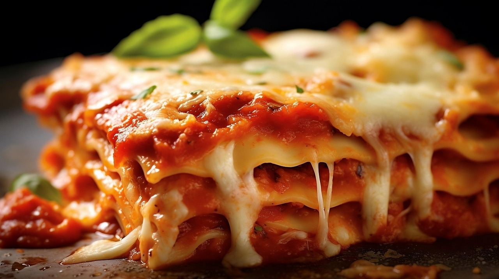
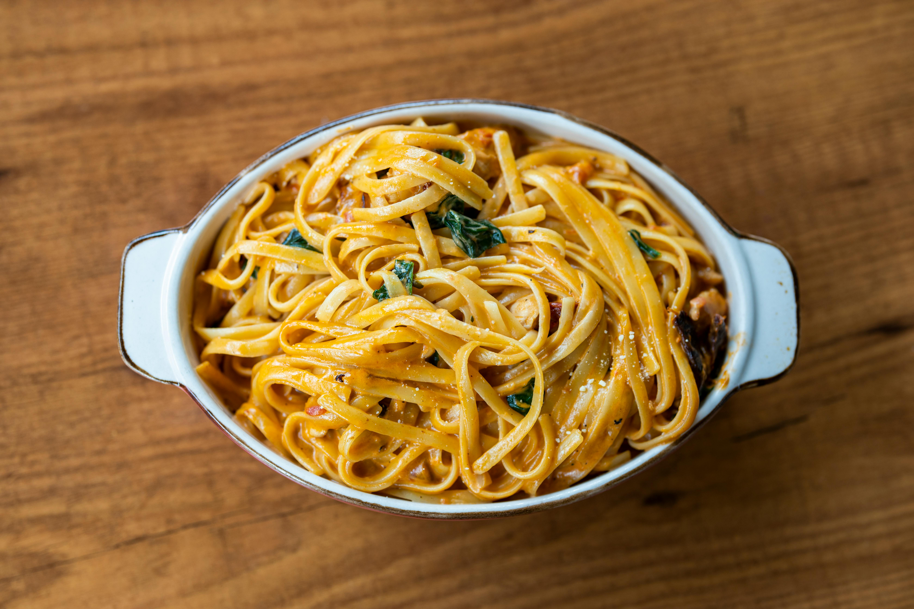

Pratos típicos da culinária Italiana
A culinária italiana é uma das mais tradicionais e apreciadas do mundo, caracterizando-se pela simplicidade e pela qualidade dos ingredientes. Ela valoriza pratos frescos, com massas, queijos, azeites e ervas como protagonistas, sempre priorizando o sabor natural. Cada região da Itália tem suas próprias receitas e influências, o que resulta em uma diversidade de sabores e preparações. A pizza, a pasta e os risotos são apenas alguns exemplos que refletem a riqueza e a tradição dessa gastronomia.
Lasanha

Farfalle com camarão

Penne

Talharim
